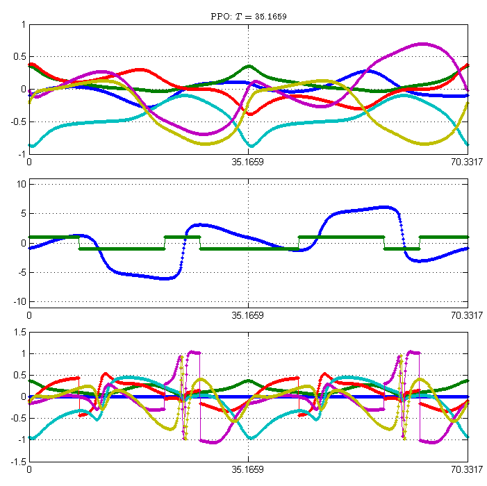

Relative periodic orbits (RPOs) and pre-periodic orbits (PPOs) of the full KSE with L = 22, symmetry reduced representation
Contents
Kuramoto-Sivashinsky Equation (KSE)
with periodic boundary condition:
In Fourier representation
where
the KSE takes the form
It is convenient to represent complex modes as pairs of real variables, either in cartesian or polar coordinates:
Symmetries:
If
is a solution of the KSE, then so are
The action of symmetry transformations on Fourier modes is as follows:
Equilibria and Travelling Waves
PC: Equilibria and Travelling Waves will also need to be discussed and plotted. Equilibria are either self-dual or come in pairs, travelling waves come in pairs, now all become equilibria in the reduced symmetry space.
Fundamental domain for KSE solutions
The fundamental domain (FD) of KSE solutions is defined in Fourier space as follows:
PC: you have done what I've been begging my guys for 1 1/2 years, thanks. I would explain this in two steps:
- Quotient out the SO(2) symmetry by fixing the phase for all orbits - here you chose
and track the phase separately, as you do. Anyting is fair in love and war, and any Poincare section that fixes the group-theoretic "times" or continuous shifts is fine. - For continuous symmetries notion of fundamental domain does not apply. Quotienting a 1d continuous symmetry reduces the state space dimension by one. This could be made explicit by going to polar coordinates, as in the Zeghlache-Mandel system example in ChaosBook.org, but it's not worth the trouble - what you did is what we need.
RLD: I like Symmetry-Reduced Representation (SRR).
- I do not find fixing a single Fourier coefficient natural, and you pay for it by having to deal with discrete shift symmetry subcases separately (fixing higher k Fourier coefficients). I would prefer representation independent phase choice, thinking in terms of states, for example fixing the phase of an important equilibrium. Such Poincare section choice we use for Lorenz in the ChaosBook.org (currently within the halcrow blog).
RLD: It seems natural to me that for solutions symmetric by L/n shift, we use n-th Fourier mode. Since functions in L/n-symmetric subspace are invariant under KS dynamics, using n-th Fourier Mode in [0, L] is the same as using the 1st Fourier mode in [0 L/n].
As I explained in Vagellis's blog, I don't think using equilibria to quotient the SO(2) symmetry will work, since I'm not sure if the shift needed to map the solution to SRR can be made unique. On the other hand, since each KS equilibrium has a dominant Fourier mode, fixing this mode also fixes teh equilibrium and the shift with respect to this mode (or the difference between neighboring modes) is unique. - The dynamics in the reduced space maps all relative equilibria and periodic orbits into equilibria and periodic orbits.
- Next, quotient out the discrete $R^2=1$ symmetry by defining a convenient fundamental domain.
is fine, modulo all my objections above to using a Fourier component. Now pairs of orbits map into an orbit, or self-dual orbits are replaced by relative prime orbits. The full O(2) has now been quotiented out.
Note 1: The invariant subspace M^{+} of antisymmetric solutions
belongs to the FD.
PC: discrete symmetry splits the FD of SO(2) quotiented dynamics into M^{+} + M^{-}, where M^{+} is flow invariant, and M^{-} is not, see the Lorenz desymmetrization example. I expect M^{+} to play important topological role in constructing symbolic dynamics.
Note 2: If both
then the solution lives in the L/2-periodic invariant subspace, and the FD is defined in terms of
PC: fixing a single Fourier coefficient is unnatural, and you pay for it by having to deal with discrete shift symmetry subcases separately (fixing higher k Fourier coefficients).
A KSE solution
is mapped into the FD by translation

PC: not "mapped into the FD", rather "mapped into M/SO(2) reduced state space"
and reflection if

PC: "mapped into the FD" under discrete symmetry R
The map into FD is characterized by two parameters: the continuous translation parameter

and the discrete R symmetry label
Here's an example of a KSE trajectory in the full statespace:
clear; L = 22; N = 32; h = 0.25; d = L; a0 = zeros(N-2,1); randn('seed',22010004); a0(1:8) = 0.2*randn(8,1); [tt, aa] = ksfmstp2(a0, L, h, 400, 1); ii = 82:length(tt); set(gcf,'pos',[350 650 700 300]); clf; plot(tt(ii)-tt(ii(1)),aa(1:6,ii),'.-'); set(gca,'pos',[0.05 0.15 0.92 0.75],'xlim',[0 95]); legend('b_1','c_1','b_2','c_2','b_3','c_3'); title('KSE solution: first three modes as functions of time'); xlabel('t');
Here is the SO(2) translation and the FD R-symmetry label as a function of the above trajectory in the full state space:
va = aa(1:2:end,ii) + 1i*aa(2:2:end,ii); theta1 = angle(va(1,:)); fa = ksfm2(aa(:,ii),L); thetadot1 = (aa(1,ii).*fa(2,:)-aa(2,ii).*fa(1,:))./(aa(1,ii).^2+aa(2,ii).^2); rho = ones(1,size(fa,2)); rho(thetadot1 > 0) = -1; ell = mod((pi/2 - theta1)*(L/2/pi)+L/2,L)-L/2; clf; plot(tt(ii)-tt(ii(1)),[ell; rho]','.-'); set(gca,'pos',[0.05 0.15 0.92 0.75],'xlim',[0 95],'ylim',[-L L]/2); grid on; lh = legend('$\ell$','$\rho$'); set(lh,'interp','latex'); title('Variables required to map the solution into the fundamental domain'); xlabel('t');

Here is the same trajectory in the M/O(2) reduced state space::
tau = exp(1i*(1:N/2-1)'*(pi/2-theta1)); vf = tau.*va; af = zeros(N-2,size(vf,2)); af(1:2:end,:) = real(vf); af(2:2:end,:) = imag(vf); ir = find(rho == -1); af(1:2:end,ir) = -af(1:2:end,ir); plot(tt(ii)-tt(ii(1)),af(1:6,:),'.-'); set(gca,'pos',[0.05 0.15 0.92 0.75],'xlim',[0 95]); legend('b_1','c_1','b_2','c_2','b_3','c_3'); title('Image of the KSE solution in the fundamental domain'); xlabel('t');
This looks rather messy, but it allows us to map all solutions related by the symmetries of the KSE into a single solution in the FD.
PC: agreed, but it is OK
- This, indeed, is the Fourier expansion of a solution in the M/SO(2) space, with R reflections keeping the trajectory in the FD.
- but, Mein Gott! Two of my personal triumphs of 1976 (period doubling as observed in flows) was to (1) get rid of plots of time series, replace them by state space trajectories. (2) stop experimentalists from staring at Fourier series instead of statespace traqjectories.
- In this nightmare you bring back both!
- first please replot every M/SO(2) reduced trajectory (no R quotienting yet) in the statespace representation (2 or 3d frame formed by equilibria and their reflections, as in our KS and pCf papers). Flow should be nice and smooth, with equilibria and periodic orbis lying on symmetry lines.
- then replot, now M/O(2) reduced trajectory - hopefully your translational symmetry Poincare section by first coefficient phase is a sensible section in the states space as well, and discontinuities (points where you exit FD, then re-enter it R-refelcted) line up nicely.
- I'm hopeful about Poincare return maps - check out how pretty is the desymmetrized Lorenz return map in ChaosBook.org.
Images of RPOs and PPOs in the fundamental domain
The following examples illustrate how RPOs and PPOs appear in the FD.
clear; load ks22f90h25; h = 0.1; irpo = 5; a0 = rpo(irpo).a1; tend = 2*rpo(irpo).T1; [tt,aa] = ksfmetd2(a0, L, h, tend, 1); set(gcf,'pos',[350 250 700 700]); clf; hax = subplots(3,1,[0 0 0 0.05],[0.06 0.04 0.05 0.0]); axes(hax(1)); plot(tt,aa(1:6,:),'.-'); set(gca,'xlim',[0 tend],'xtick',(0:2)*tend/2); title(['RPO: $T = $~' num2str(tend/2) '~~$\ell = $~' num2str(rpo(irpo).s1)],'interp','latex'); grid on; [af, ell, rho] = ksfm2fd(aa, L); axes(hax(2)); plot(tt,[ell; rho]','.-'); set(gca,'xlim',[0 tend],'ylim',[-L L]/2,'xtick',(0:2)*tend/2); grid on; axes(hax(3)); plot(tt,af(1:6,:),'.-'); set(gca,'xlim',[0 tend],'xtick',(0:2)*tend/2); grid on;
The RPO is shown over two periods. In the FD it looks like a periodic orbit. The translation variable correctly trances the shift of the RPO, and so the difference between its values at the beginning and at the end of the period is equal to the RPO shift (with a minus sign).
ippo = 6; a0 = ppo(ippo).a1; tend = 2*ppo(ippo).T1; [tt,aa] = ksfmetd2(a0, L, h, tend, 1); set(gcf,'pos',[350 250 700 700]); clf; hax = subplots(3,1,[0 0 0 0.05],[0.06 0.04 0.05 0.0]); axes(hax(1)); plot(tt,aa(1:6,:),'.-'); set(gca,'xlim',[0 tend],'xtick',(0:2)*tend/2); title(sprintf('PPO: $T = $%8.4f',tend/2),'interp','latex'); grid on; [af, ell, rho] = ksfm2fd(aa, L); axes(hax(2)); plot(tt,[ell; rho]','.-'); set(gca,'xlim',[0 tend],'ylim',[-L L]/2,'xtick',(0:2)*tend/2); grid on; axes(hax(3)); plot(tt,af(1:6,:),'.-'); set(gca,'xlim',[0 tend],'xtick',(0:2)*tend/2); grid on;
In case of the PPO, it is clear that it also becomes a periodic orbit in FD and the translation variable shows the 'winding' and 'unwinding' of the shift over two periods.
Poincare map of the KSE solutions in the fundamental domain
Idea: Maybe we can define the Poincare map in the FD using points along the KSE flow where the reflection parameter changes (both from 1 to -1 and from -1 to 1). Obviously, this happens whenever
PC: agreed -
- see how it works for Lorenz map - especially the role of the heteroclinic connection in making the return map unimodal. Here (as with Lan) we will need a set of sections, each associated with its equilibrium.
- Very curious about how continuous symmetry reduction will do to the symbolic dynamics. I suggest we complete the analysis of the Zeghlache-Mandel system first.
Note that RPOs and PPOs will be represented by periodic orbits of this Poincare map. Besides, all RPOs will be represented by periodic orbits with only even periods while PPOs will be represented only by odd period orbits.
RPOs and PPOs for KSE with L = 22
So far, I have located over 6000 RPOs and over 6000 PPOs with periods less than 200. The search for orbits with periods less than 100 has been quite exhaustive, so I do not expect to find many more of those. Assuming the number of orbits grows exponentially with the period, the figure below shows that there could be as many as 50000 RPOs and 50000 PPOs with periods less than 200.
set(gcf,'pos',[350 350 700 600]); clf; semilogy([rpo.T],1:length(rpo),'.',[ppo.T],1:length(ppo),'r.'); set(gca,'ylim',[1 1e5]); grid on; hold on; legend('RPOs','PPOs'); xlabel('Period (T)'); ylabel('Number of orbits with period less than T'); pr = polyfit([rpo(20:400).T],log(20:400),1); pp = polyfit([ppo(20:400).T],log(20:400),1); semilogy([rpo.T],exp(pr(1)*[rpo.T]+pr(2)),'-',[ppo.T],exp(pp(1)*[ppo.T]+pp(2)),'r-');

PC: I'm getting used to RPOs and PPOs beign equally frequent - they belong to the two sheets of the double cover of O(2) . Once we get Markov graphs, we should get the entropy from topological zeta functions.
PC - Jan 2, 2008: no further comments until you replot the trajectories in the statespace representation.